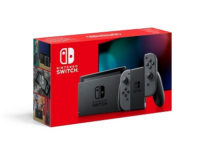

Nintendo Switch
Nintendo Switch var tidigare känt under projektnamnet NX och är en stationär och bärbar konsolhybrid
som har en LCD-skärm och två avtagbara kontroller på sidorna.
För att projicera bilden på en TV-apparat placeras konsolen i en medföljande
dockningsstation.
Nintendo Switch utannonserades genom en trailer på Nintendos hemsida och Youtube-kanal den 20 oktober 2016.
Under en presentation i Tokyo den 13 januari 2017 meddelade Nintendo att konsolen skulle släppas den 3 mars 2017.
Det blev den
första konsolen från Nintendo att släppas simultant över hela världen.
Nintendo Switch lanserades med riktpriset 299,99 USA-dollar i USA och 29 980 yen i Japan.
Det blev den mest sålda konsolen från Nintendo under en lanseringshelg
någonsin i Norden, Europa och Nordamerika.
Reklam
Populära spel
-
Mario Kart 8 Deluxe
-
Animal Crossing: New Horizons
-
Super Smash Bros. Ultimate